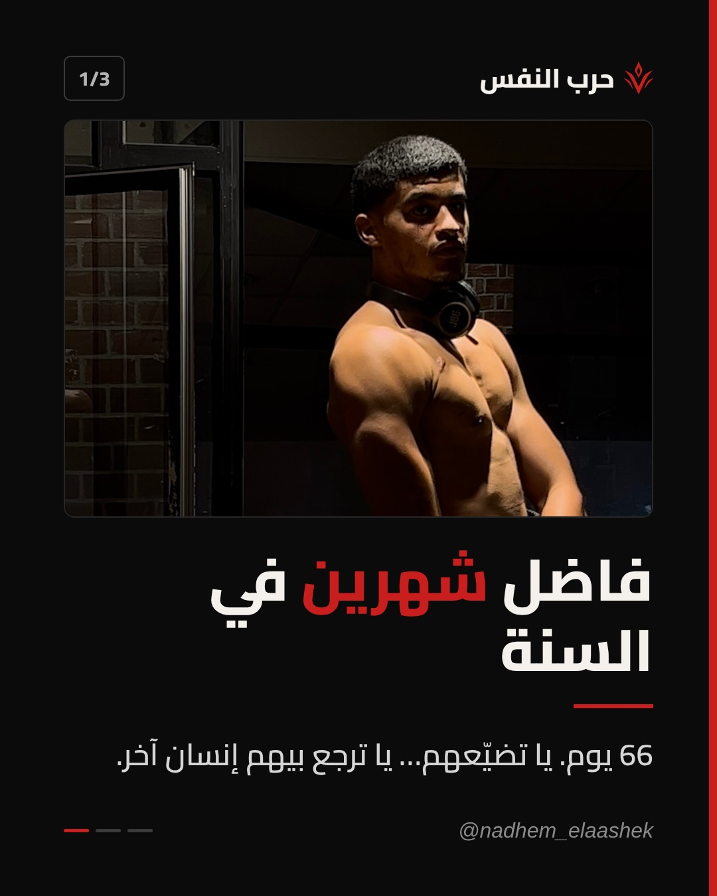
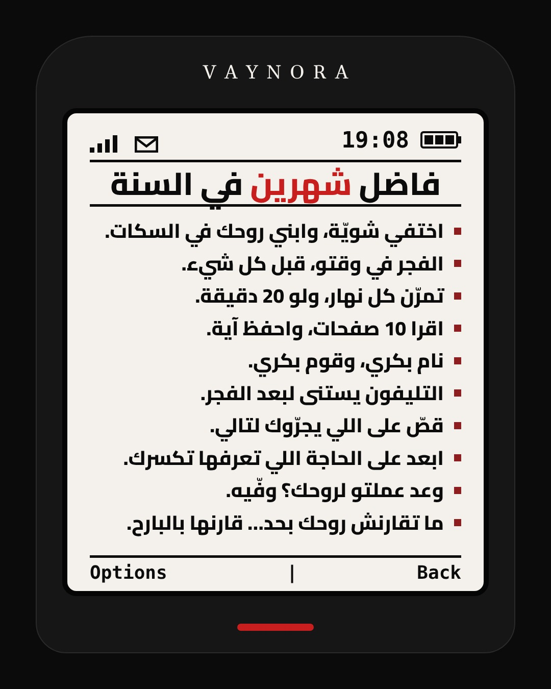
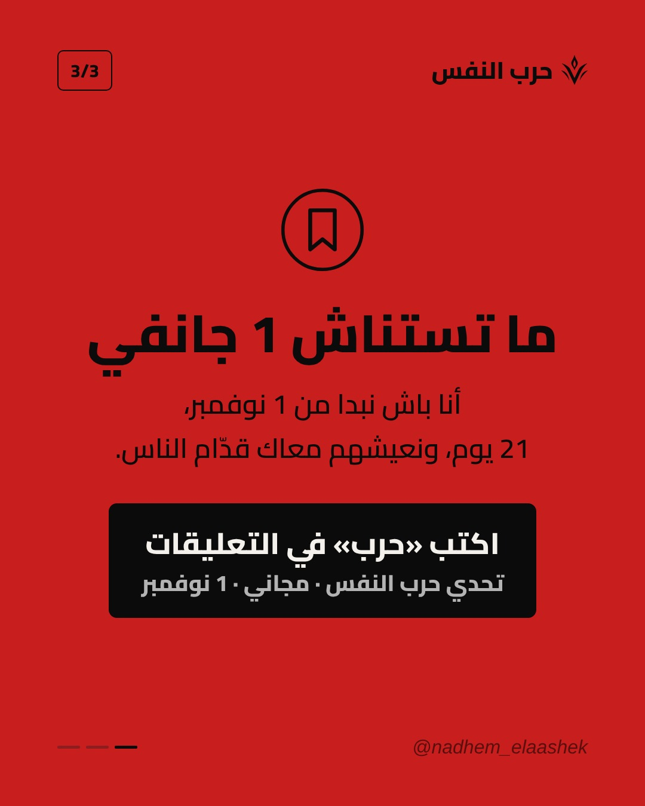

بوست «فاضل شهرين في السنة»
اضغط مطوّل على كل صورة باش تسجّلها، ولا هبّط الـ ZIP.
تحميل الكل (ZIP)


الكابشن
فاضل شهرين في السنة… 66 يوم بالضبط ⏳ ياسر ناس تقول «من 1 جانفي نبدّل روحي». أما 1 جانفي ما عندوش سحر. اللي ما بداش اليوم، ما يبداش غدوة. الشهرين هاذم يا تضيّعهم في السهر والتليفون… يا تخرج منهم بنسخة جديدة من روحك 🤍 أنا باش نبدا من 1 نوفمبر: 21 يوم «حرب النفس»، مجاني، ونعيشهم معاك قدّام الناس. اكتب «حرب» في التعليقات ونبعثلك التفاصيل ⚔ واحفظ البوست، ارجعلو كل نهار تحس روحك طحت. اصنع من الألم قوة. #حرب_النفس #VAYNORA #تطوير_الذات #الانضباط #تونس